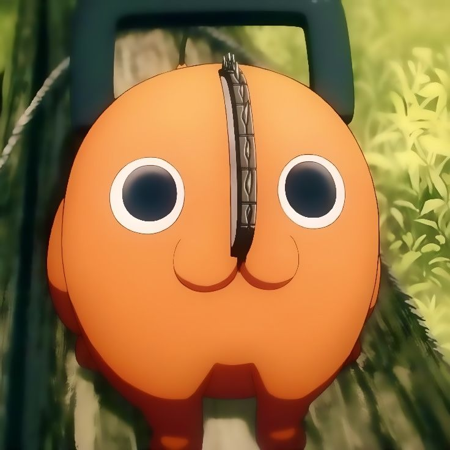

Información General
Pochita es un demonio motosierra y uno de los personajes más adorables de la serie "Chainsaw Man". Es el fiel compañero de Denji y tiene una apariencia peculiar que combina un cuerpo pequeño y redondeado con una motosierra en su cabeza. A pesar de su apariencia tierna, Pochita posee un gran poder y es crucial para la transformación de Denji en Chainsaw Man.
Características
- Nombre: Pochita
- Edad: Desconocida
- Apariencia: Demonio pequeño y redondeado con pelaje naranja, grandes ojos negros y una motosierra en su cabeza.
- Habilidades: Pochita puede fusionarse con Denji, permitiéndole transformarse en Chainsaw Man y acceder a sus poderes de motosierra.
Relaciones
Pochita tiene una relación muy cercana con Denji, a quien acompaña y protege. A lo largo de la serie, su vínculo se fortalece y Pochita demuestra ser un amigo leal y valiente.